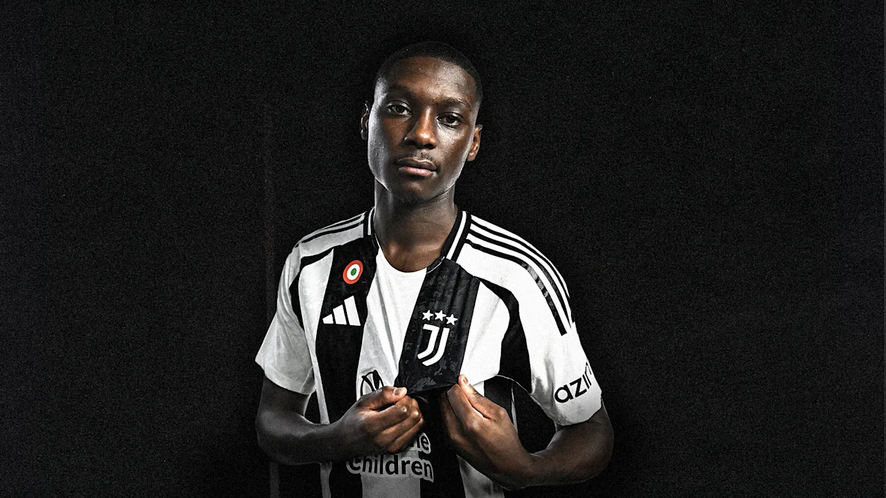
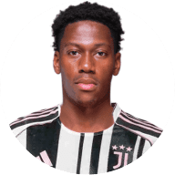
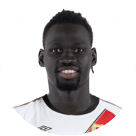
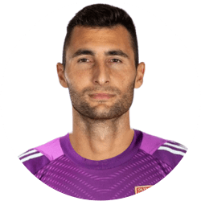

Actualidad del Club

Habla el "killer": Kolo Muani tiene claro que este es el año de Sportium y que no tienen nada que envidiar a los demás clubes.
Segundo Castillo en rdp: El que fuera premiado como mejor entrenador del 2025 dará una rueda de prensa esta semana.
Nuestros Capitanes

David

Pathé Ciss

Greif